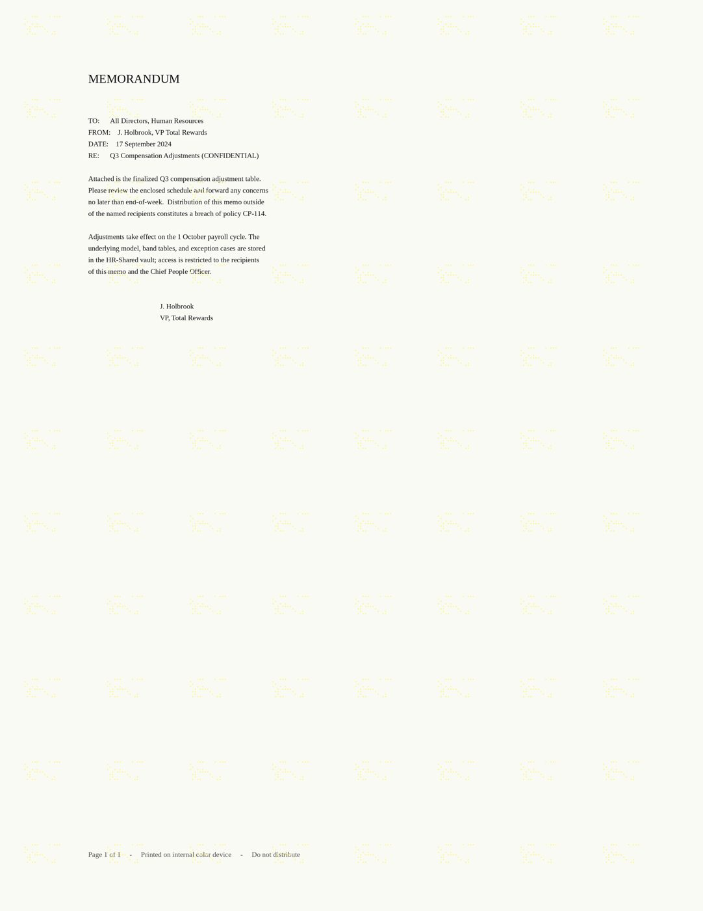

CryoVault (ISFCR) CTF · Forensics · 50 pts
Artifacts: FP02CF4.SHD (520 B), FP02CF4.SPL (1872 B), scan.png (2550×3300).

Story: a workstation was imaged and three print-spooler leftovers survived; a scanner holds a scan of the printed page. Prove the page came from that machine and rebuild the flag.
The flag is built from three recovered values:
flag = isfcr{ sha256(username + "|" + serial + "|" + timestamp)[:16] }with timestamp formatted YYYY-MM-DDTHH:MM:SSZ.
1. Username - the print spooler shadow file (.SHD)
FP02CF4.SHD is a Windows spooler shadow file. Its layout is a small header whose
32-bit fields are byte-offsets into a trailing UTF-16LE string table:
off value meaning
0x00 0x00090000
0x04 1
0x08 0x2cf4
0x0c 1
0x10 0x100 -> "j.holbrook" <- job owner
0x14 0x118 -> "j.holbrook"
0x18 0x130 -> "Q3-Compensation-Adjustments.docx"
0x20 0x174 -> "\\PRINT01\HR-DocuColor-12"
0x24 0x1a8 -> "Xerox DocuColor 12 PS"
0x30 0x1d4 -> "NT EMF 1.008"
0x40 <FILETIME>
0x58 0x1f0 -> "FIN-WKS-014" <- originating workstation
0x60 GUIDSo the job owner is j.holbrook (already lowercase). The originating machine is
FIN-WKS-014; the printer is the Xerox DocuColor 12 PS shared as
\\PRINT01\HR-DocuColor-12.
The .SPL is the spooled page as an EMF (signature " EMF" at 0x40, EMR_HEADER starts
at 0x18, 13 records) and contains only the memo text - the date line
"DATE: 17 September 2024" - and no serial. It confirms the page but yields no device id.
2. Timestamp - the shadow-file FILETIME
The 8-byte FILETIME at .SHD offset 0x40 is 0x01db090f0de78e00 - 100-nanosecond
intervals since 1601-01-01 UTC.
dt = 1601-01-01 + (0x01db090f0de78e00 / 10) microseconds = 2024-09-17 14:37:00 UTC→ 2024-09-17T14:37:00Z (seconds always 00, matching the challenge).
3. Printer serial - the yellow-dot MIC on the scan
scan.png carries a very faint repeating pattern in pale yellow
(RGB ≈ (250,246,160); background (250,250,244)). Isolating the yellow ink
(r>150 & b<r-20) yields exactly 28 dots per tile, on a 9-px grid, repeating every
300 px - the classic Xerox DocuColor "yellow dots" / Machine Identification Code (MIC)
that encodes the printer serial, date and time (see the EFF DocuColor Tracking Dot
Decoding Guide).
The decoded tile is a 15×8 dot matrix:
c0 1 2 3 4 5 6 7 8 9 10 11 12 13 14
r0 . . . # # # . . . . # . # # # <- column-parity row
r1 # . . . . . . . . . . . . . .
r2 . . # . . . . . . . . . . . .
r3 # . . # . # . . . . . . . . .
r4 . . # . # # # # . . . . . . .
r5 . # # . . . . . # . . . . . .
r6 . . # . . . . . . # . . # . .
r7 . # . # # . . . . . . # # . .Decoding (EFF scheme: each column is a 7-bit byte, bit6 = row1 … bit0 = row7; the top row is the column-parity row and the left column the row-parity column):
| col | value | meaning |
|---|---|---|
| 1 | 37 | minute |
| 2 | 14 | hour |
| 3 | 17 | day |
| 4 | 9 | month |
| 5 | 24 | year (2024) |
| 6..12 | 8 8 4 2 0 1 3 | serial digits |
The date fields land exactly on the SHD FILETIME (2024-09-17 14:37) - the pattern and
the spool file agree, proving the page came from that machine. The remaining serial digits
read 8842013.
(Verified: the parity structure holds - every data column's row-parity bit and every row's column-parity bit are consistent - and the extraction was cross-checked against the EFF guide's own worked example, serial 21052857 / 2005-06-21 12:50, which decodes correctly.)
4. Build the flag
1import hashlib
2u = "j.holbrook"
3s = "8842013"
4ts = "2024-09-17T14:37:00Z"
5print("isfcr{%s}" % hashlib.sha256(f"{u}|{s}|{ts}".encode()).hexdigest()[:16])isfcr{e24d16be9d731cba}